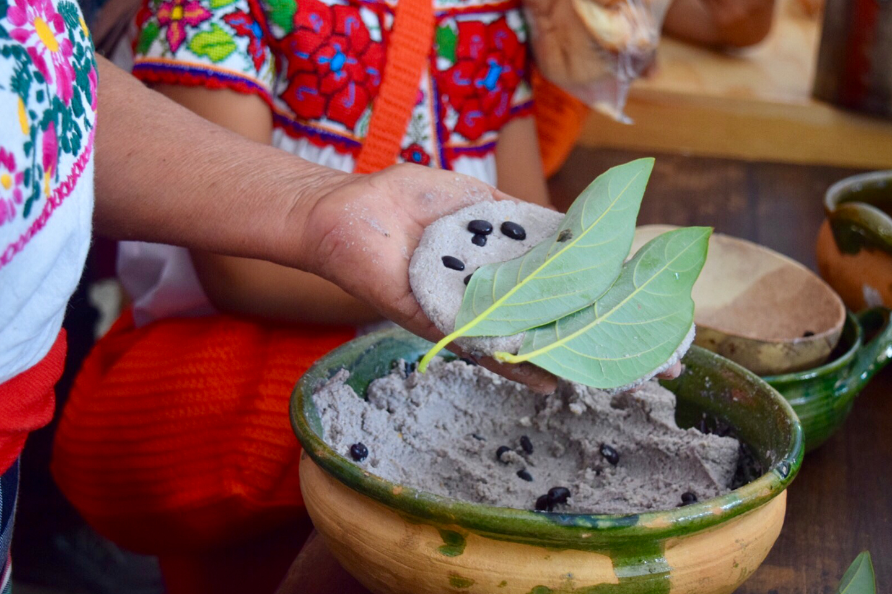

TAMALES DE PIEDRA

ESTOS TAMALES SON FAMOSOS PORQUE SON HECHOS CON LA TRADICIONAL MASA DE MAÍZ, FRIJOLES NEGROS, RELLENOS DE QUESO Y BAÑADOS CON LA SALSA CAPONE, HECHA CON JITOMATE, CEBOLLA, CHILE Y CILANTRO. EN ALGUNOS LUGARES LOS SIRVEN SOBRE UN ESPEJO DE FRIJOLES REFRITOS NEGROS.
ESTA VERSIÓN TAMBIÉN FORMA PARTE DEL ACERVO DE PLATILLOS TÍPICOS DE GUANAJUATO, UNA VERSIÓN LOCAL DE LOS TAMALES DE FRIJOL Y MUY CARACTERÍSTICA DE LA COCINA OTOMÍ Y ES UN PLATILLO TAN SABRORO QUE TE CHUPARÁS LOS DEDOS DESPUÉS DE PROBARLO.